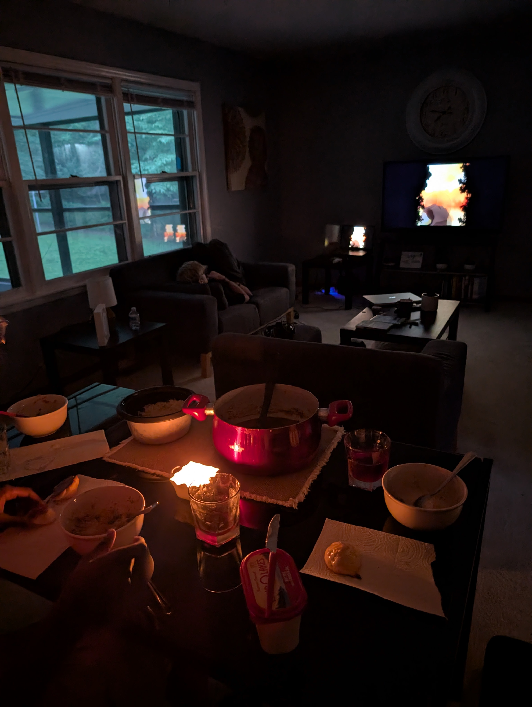
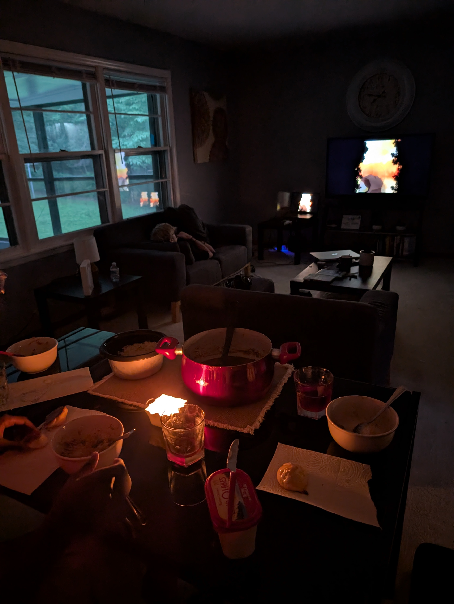

Week 1
My first week in Huntsville was filled with meeting new people, learning new things, and seeing things I didn't
even know existed.
From the very start, Leidos Dynetics has created an environment that’s not only technically exciting but also
genuinely supportive.
Everyone I’ve met has been welcoming, curious about our work, and more than willing to share their own
experiences and advice.
My friends and I arrived on Monday (5/26), moved into the Airbnb, and immediately got to work exploring the
materials Mundy had given us to study.
The following few days were focused on getting oriented, meeting new people, setting up our spaces, and learning
more about our projects.
Mundy was great about giving us a strong start and making sure we were comfortable.
What stood out to me the most this week was the company culture.
I could've never imagined how inviting and just generally nice the community at Leidos Dynetics is—especially
the AI and Machine Learning Branch.
I'm more than excited to keep building on this momentum and continue learning new things every day.
Week 2
My second week is where I really got to dive deeper into my actual work and start getting my hands dirty. My
project in particular dealt with integration into a larger code base. This is usually an incredibly daunting
task; however, the engineers here were eager to help me out and explain the entire code base to me so I got a
great understanding of the bigger picture. This allowed for quick turn around on my own code -- less time spent
having to parse other coders stuff meant I could focus on making mine the best it could be. By the end of the
week I had a nice MVP that I could show off to my mentors.
Finally, on Friday, my peers and I gave presentations to our mentors about our project, where it is, where it's
going, and what we've learned. This was one of my favorite parts of the week. I got to not only present my
project and get very valuable feedback on it, but I also got to watch my friends present theirs. It was really
cool to see. The plan is to do this every week until the end of the internship as to prepare us for our final
presentation in front of the big guys.
Week 3
I figured I’d start this week’s post by diving deeper into my project. The core idea is to build a modular LLM
pipeline that can integrate easily with other systems. Up until this week, my pipeline could:
- Take in JSON data, convert it to SQL, and append it to a database
- Accept a server-side question about the data, generate an SQL query with an LLM, query the database, and
return the results — all server-side
This basic version worked but had several flaws and missing pieces. So this week, I focused on expanding its
capabilities. I added:
- Live data streaming into the database
- Support for imperative (action-based) input
- An LLM module to turn raw data into natural language
- A simple speech-to-speech pipeline
- Client-side question-and-answer capability
- A full architecture redesign to make the whole pipeline more modular and developer-friendly
Getting live data flow working meant digging into HTTP requests, port forwarding, and optimizing speed and
bandwidth. I designed a batching system to send data in chunks instead of one item at a time, which made a big
difference.
The imperative input feature started out simple: I used a small LLM, did some prompt engineering to pick actions
from a list, and parsed the output. But by the end of the week, I overhauled it completely. Originally, adding a
new action required editing multiple files and wasn’t intuitive. Now, with a cleaner object-oriented approach, I
created an Action class. Developers can simply extend this class to define new actions — with a
name, description, example, and the actual code to run. An ActionDispatcher handles registering and
calling them. This is much more elegant and I'm very happy with the outcome.
The speech-to-speech pipeline was surprisingly straightforward. I used OpenAI’s Whisper Small for speech-to-text
and a separate text-to-speech model, then connected them — a good example of how clear pipeline design makes
life easier. The size of these speech to text models blew me out of the water. I mean speech to text is halfway
magical
and these models are in the low millions of parameters!
The biggest challenge of the week, by far, was setting up the client-side question and answer system. Without
getting too deep into
the weeds: I needed two servers to communicate securely, which required port forwarding and a custom proxy
server to handle traffic. It took a full day of troubleshooting, overhauling, rubber ducking with Daniel, and
two hot chocolates, but it finally worked.
Overall, this week really pushed me to apply and expand my knowledge across multiple areas — and I’m excited to
keep improving this system.
Week 4
Compared to last week, this one felt slower on the coding front but was just as valuable in other ways. I spent
quite a bit of time in meetings discussing the future direction of my project. Nobody loves meetings, but I
really appreciate how much thought everyone — especially Mundy — puts into making sure I have meaningful,
interesting tasks and a clear path forward. It means a lot to feel supported and trusted to steer this project
where I think it should go.
After a few demo sessions showing my rough-but-working pipeline, I got a lot of useful feedback and ideas for
new features. I also carved out some time to read more papers and deepen my understanding of the core topics
behind my project. On the coding side, progress was smaller but solid: I finalized a stable launch sequence and
tinkered with the UI to make it cleaner and more intuitive.
One highlight each week is being part of Mundy's group activities — our presentations, journal club, and the
AI/ML boot camp. This week’s presentation session went really well. Mundy helped me polish my slides with
clearer graphics and better structure. After I presented, Daniel gave a mini-talk
about P vs NP — a classic computer science problem that was followed by a fun discussion and made me look forward to my
time to present even more.
For journal club, we read a paper introducing the basics of Information Theory. I’d never formally studied it
before, but after reading and watching a few follow-up videos, I felt like I started seeing Information Theory
concepts everywhere. It’s honestly amazing how one paper can give you a fresh lens on the world. Huge shoutout
to Mundy for picking such a thought-provoking read.
To wrap up the week, we had our AI/ML boot camp session, where Mundy broke down how loss functions and gradient
descent work in training and backpropagation. Even though I’d seen these ideas before, getting to revisit them
with clear explanations and examples really helped solidify my understanding.
All in all, this week felt like laying down the groundwork for bigger things ahead — both in terms of technical
progress and deepening my knowledge base. Excited to see what next week brings!


 
